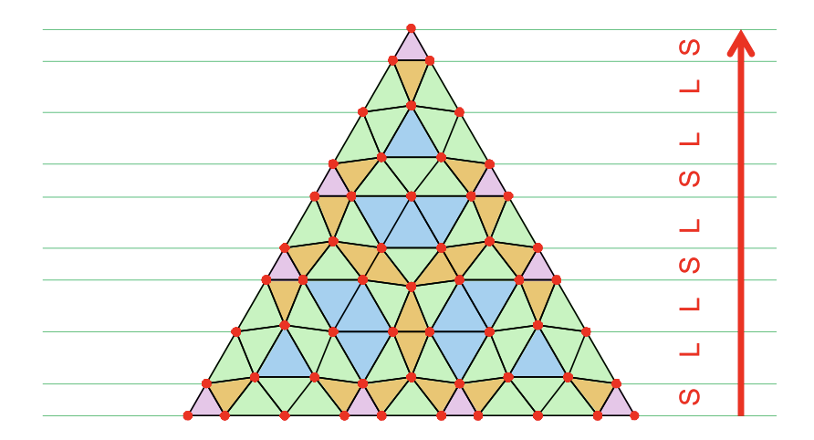

Triangular and dice quasicrystals modulated by generic one-dimensional aperiodic sequences
Toranosuke Matsubara, Akihisa Koga, and Tomonari Dotera
Physical Review B111, 104104 (2025).
doi.org/10.1103/PhysRevB.111.104104

We present a method for generating hexagonal aperiodic tilings that are topologically equivalent to the triangular and dice lattices. This approach incorporates aperiodic sequences into the spacing between three sets of grids for the triangular lattice, resulting in “modulated triangular lattices.” Subsequently, by replacing the triangles with rhombuses, parallelograms, or hexagons, modulated dice or honeycomb lattices are constructed. Using the generalized Fibonacci, Thue-Morse, and tribonacci sequences, we demonstrate several examples of hexagonal aperiodic tilings. Structural analysis confirms that their diffraction patterns reflect the properties of the one-dimensional aperiodic sequences, namely, pure point (Bragg peaks) or singular continuous. Our method establishes a general framework for constructing a broad range of hexagonal aperiodic systems, advancing aperiodic-crystal research into higher dimensions that were previously focused on one-dimensional aperiodic sequences.